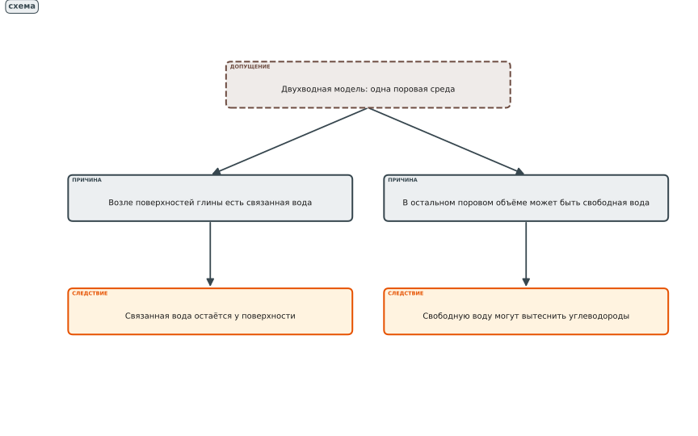

Двухводная модель оценки водонасыщенности различает связанную и свободную воду.
Разница в подвижности помогает понять отклик глинистого песчаника.
Пороговая идея. В модели вода в глинистой породе не едина по подвижности: часть остаётся у поверхности глины, часть могут вытеснить углеводороды. модель
Анимация: как это происходит

1 / 3
Задать вопрос о разных ролях воды в одной породе.
Допущения: Отдельного шаблона пор нет; используем логическую схему, без заявления о толщине слоя или геометрии..
Как это работает
Откуда появилась модель
Работы Ваксмана со Смитсом и Томасом объясняли причины отклика глинистого песчаника, песчаника с глинистыми минералами. Эти работы приближали модели к реальному пласту. Клавье с соавторами развили подход Ваксмана для оценки водонасыщенности. стр. 136
«Beginning in the late 1960s, the work of Waxman and Smits (1968) and Waxman and Thomas (1974) helped to better understand the physical causes of the responses of logging measurements to shaly sands and to develop interpretive models to better approximate the physical reality of formations.»
«Clavier et al. (1977) built on the work of Waxman and his colleagues with the introduction of the dual water model for the determination of water saturation.»
Две роли воды
Связанная вода образует неподвижный слой у поверхности глинистых минералов. Свободная вода — другая часть воды в модели. В модели свободная вода подвижна, и углеводороды могут её вытеснить. Автор отмечает: модель сложнее, но лучше описывает каротажный отклик в широком диапазоне условий. Это помогло её распространению. стр. 136
«The dual water model postulates two different types of water in a shaly formation, a immovable water layer next to the clay surfaces (bound water)»
«movable water that can be displaced by hydrocarbons (free water).»
«This technique, while more complex in its use, continues to gain popularity because of its closer approximation to the responses of shaly sands in a wide variety of conditions.»
схема
Слой у глинистых минералов и подвижная вода представлены раздельно.
Класс B · схема · нарисовано кодом · стр. 136
Решение на данных
Отличить две части воды
Признаки
Положение относительно поверхности минерала
Подвижность воды
↓
Правило
Неподвижный слой называют связанным. Подвижная вода, которую могут вытеснить углеводороды, свободна. стр. 136
↓
Вывод
Два вида воды имеют разные роли в модели.
Потренируйтесь
Дано: Неподвижный слой у поверхности глинистого минерала. (модель)
Он соответствует определению связанной воды.
Дано: Вода подвижна и может быть вытеснена углеводородами. (модель)
Вытеснение возможно для свободной воды.
Что это значит для данных по книге
Модель различает компоненты воды по подвижности; речь идёт об интерпретации откликов, а не о прямом замере каждого компонента.
Вход
Каротажные отклики глинистого песчаника.
Выход
Оценка водонасыщенности по двухводной модели.
Где ломается
Не отождествляйте связанную воду со свободной водой.
Где здесь ручной труд специалиста
Входные данные
Отклики каротажа и сведения о применяемой модели.
Ручные шаги
Выбрать модель и проверить смысл расчётных компонентов.
Точки суждения
Взвесить сложность метода и адекватность отклика для конкретной породы.
Время
Более сложную модель труднее применять и проверять.
Типичные ошибки
Считать всю воду одинаково вытесняемой.
Аналогия модель
Как модель, в которой наблюдаемый сигнал объясняется разными скрытыми компонентами.
Где аналогия перестаёт работать: Здесь компоненты заданы поведением воды в порах, а не произвольным математическим разложением.
Новые понятия
каротаж (well logging)
Измерение физических характеристик вдоль ствола скважины. модель
связанная вода (bound water)
В двухводной модели неподвижный слой воды у поверхностей глинистых минералов. стр. 136
свободная вода (free water)
В двухводной модели подвижная вода, которую могут вытеснить углеводороды. стр. 136
двухводная модель (dual water model)
Модель, которая различает связанную и свободную воду в глинистой породе. стр. 136
глинистые минералы (clay minerals)
Группа тонкодисперсных минералов; это компоненты породы, а не обозначение отдельного слоя сланца. модель
глинистый песчаник (shaly sand)
В описании автора это обычно песчаная порода, содержащая глинистые минералы, а не просто песок с примесью сланца. стр. 136
углеводороды (hydrocarbons)
Вещества, основу которых составляют углерод и водород; в данном контексте нефть или газ. модель
водонасыщенность (water saturation)
Доля объёма пор, занятого водой. модель
пласт (formation)
Слой горной породы, отличаемый от соседних слоёв. модель
Все утверждения шага с дословной цитатой автора и страницей книги (по PDF).
Работы Ваксмана со Смитсом и Томасом помогли объяснить физические причины каротажного отклика глинистых песчаников и приблизить модели к реальному пласту. наблюдение
«Beginning in the late 1960s, the work of Waxman and Smits (1968) and Waxman and Thomas (1974) helped to better understand the physical causes of the responses of logging measurements to shaly sands and to develop interpretive models to better approximate the physical reality of formations.»
Клавье с соавторами развили работы Ваксмана, предложив двухводную модель оценки водонасыщенности. наблюдение
«Clavier et al. (1977) built on the work of Waxman and his colleagues with the introduction of the dual water model for the determination of water saturation.»
Связанная вода в двухводной модели — неподвижный слой у поверхностей глинистых минералов. допущение
«The dual water model postulates two different types of water in a shaly formation, a immovable water layer next to the clay surfaces (bound water)»
Свободная вода в модели подвижна и может быть вытеснена углеводородами. допущение
«movable water that can be displaced by hydrocarbons (free water).»
Хотя модель сложнее в использовании, автор отмечает её распространение, потому что она лучше приближает каротажные отклики глинистых песчаников в широком диапазоне условий. вывод
«This technique, while more complex in its use, continues to gain popularity because of its closer approximation to the responses of shaly sands in a wide variety of conditions.»
Исходный текст урока
Стр. 136 · SHALY SAND ANALYSIS
Beginning in the late 1960s, the work of Waxman and Smits (1968) and Waxman and Thomas (1974) helped to better understand the physical causes of the responses of logging measurements to shaly sands and to develop interpretive models to better approximate the physical reality of formations. Clavier et al. (1977) built on the work of Waxman and his colleagues with the introduction of the dual water model for the determination of water saturation. The dual water model postulates two different types of water in a shaly formation, a immovable water layer next to the clay surfaces (bound water) and movable water that can be displaced by hydrocarbons (free water). This technique, while more complex in its use, continues to gain popularity because of its closer approximation to the responses of shaly sands in a wide variety of conditions.